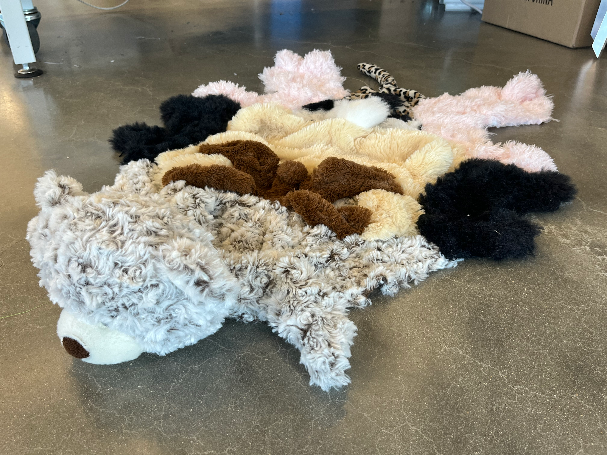

Overview
Unethically Sourced reimagines the classic bear-skin rug through a deliberately unsettling material choice. Instead of animal hide, the sculpture is constructed from the fur of numerous stuffed animals, each carefully opened at the seams, emptied of its stuffing, and reorganized into a symmetrical pelt-like shape. At the head, a teddy bear replaces the taxidermied bear, preserving the familiar silhouette while shifting the emotional register.
The component furs are hand-stitched together, resulting in a Frankenstein-like assemblage that is simultaneously playful, grotesque, and uncannily tender. The act of deconstructing beloved childhood objects introduces a moral tension: stuffed animals are things someone made , cherished, and once loved—so why does cutting them apart feel disturbing, while real hides rarely elicit discomfort?
Rather than adhering to typical vegan rhetoric, Unethically Sourced critiques the cultural comfort of “ethically sourced” animal products. Even if the animal lived well, it still had to sacrifice for human benefit. The stuffed animal format mirrors this dynamic, provoking viewers to question why empathy is unevenly distributed between objects, animals, and the materials they become.


Click image to view gallery